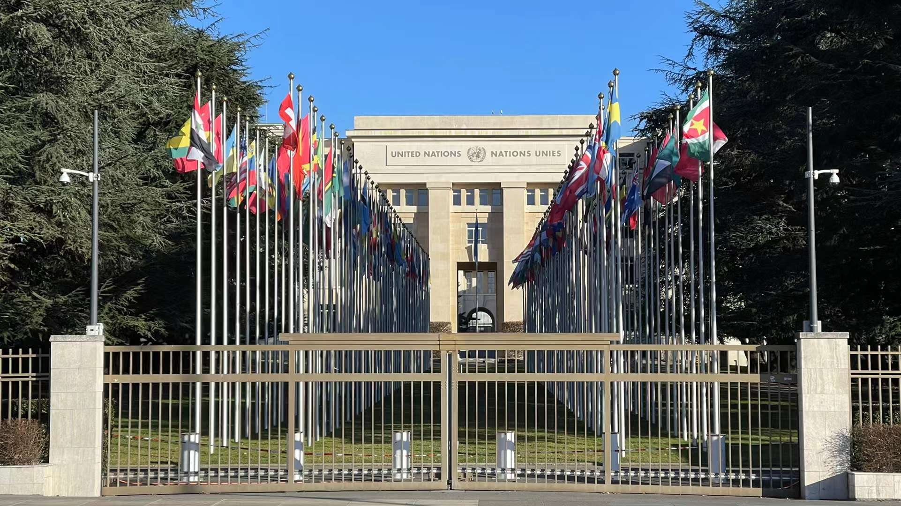
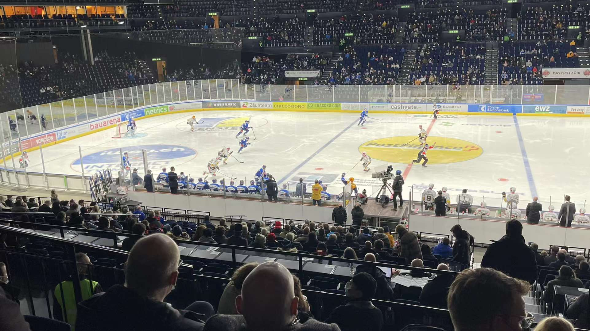
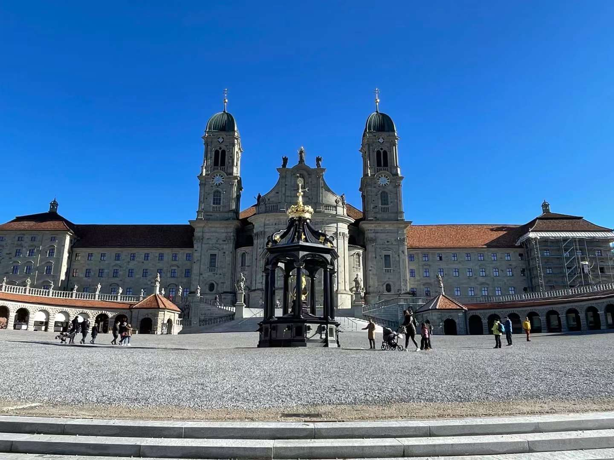
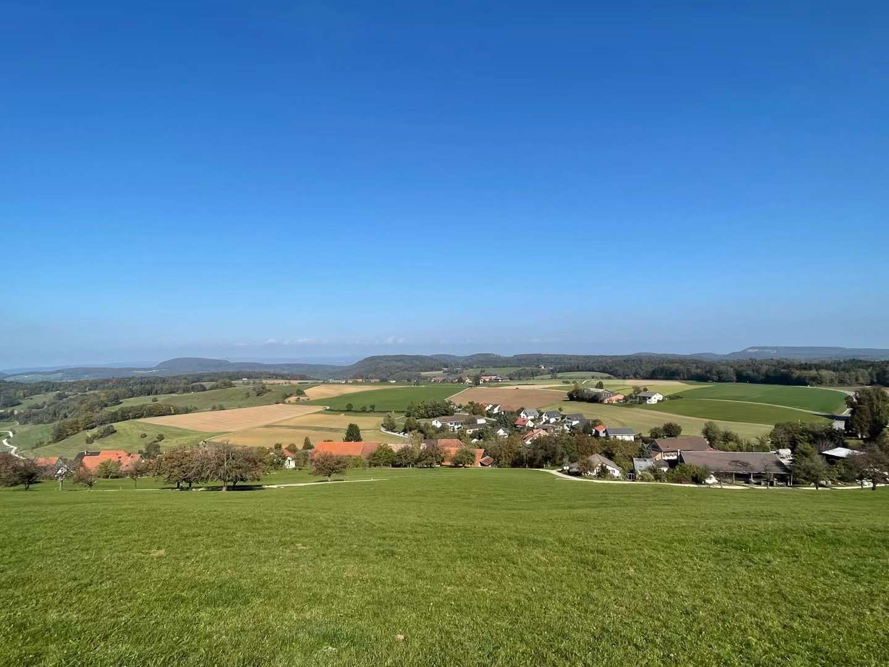
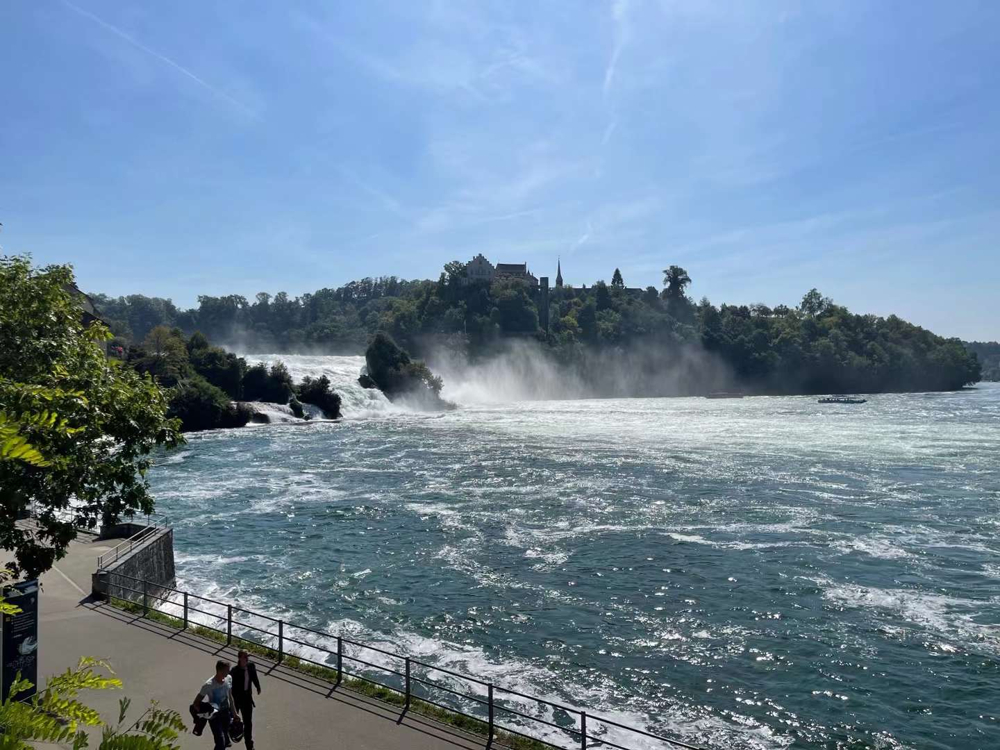
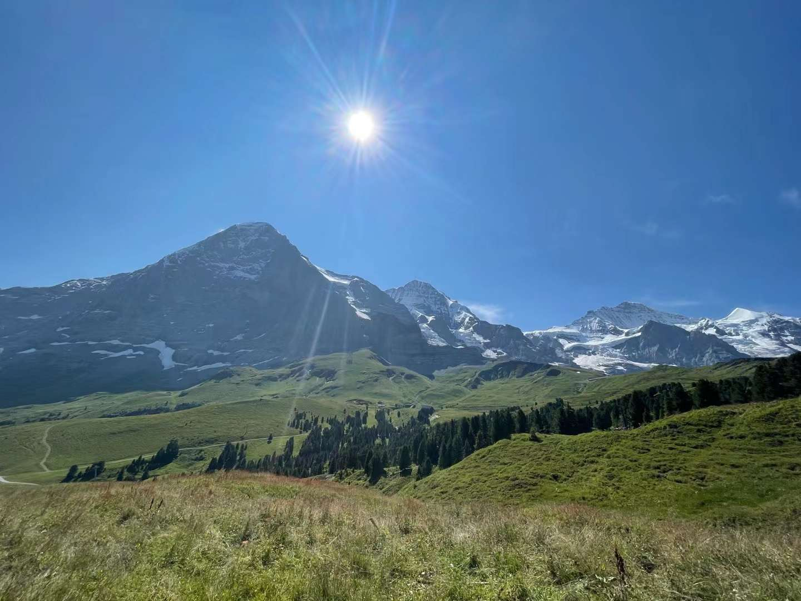
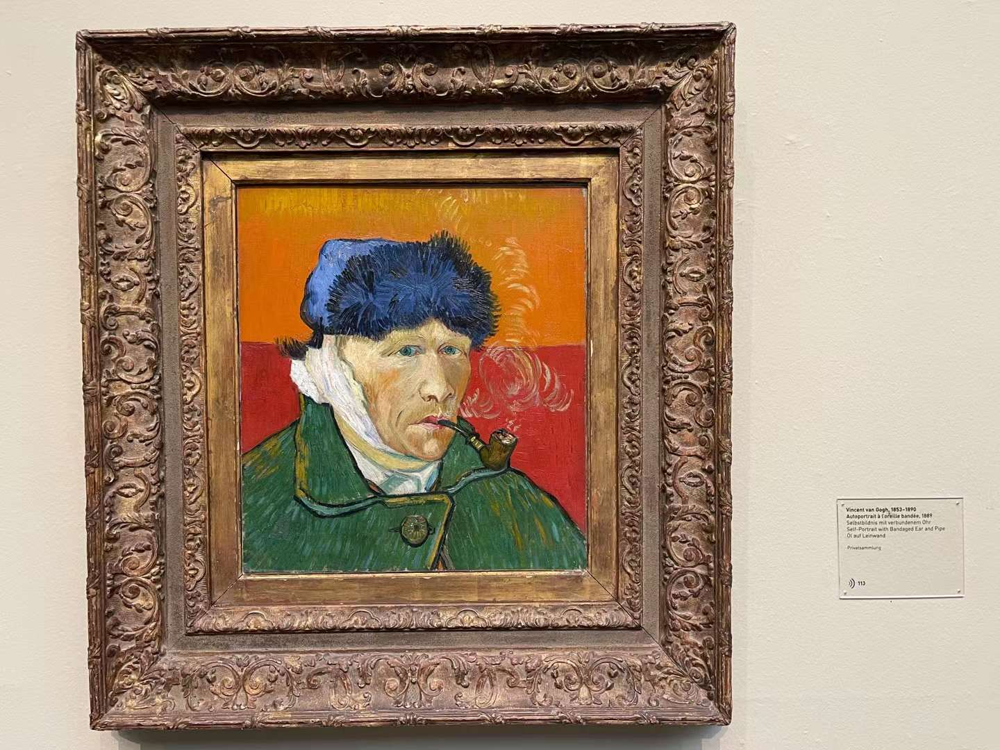
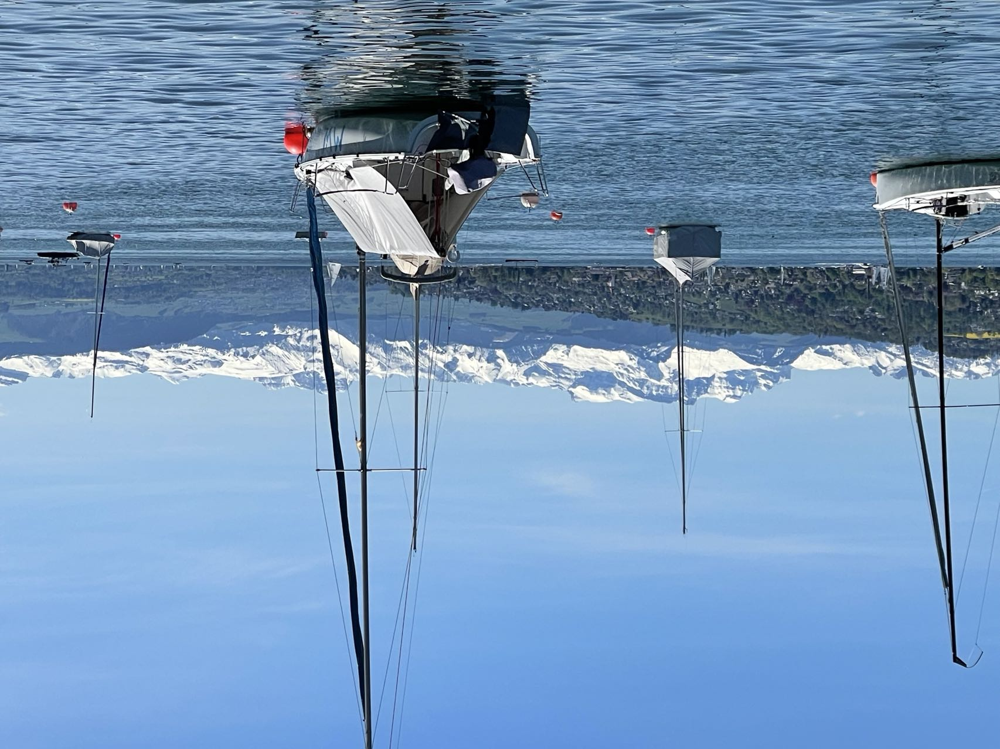
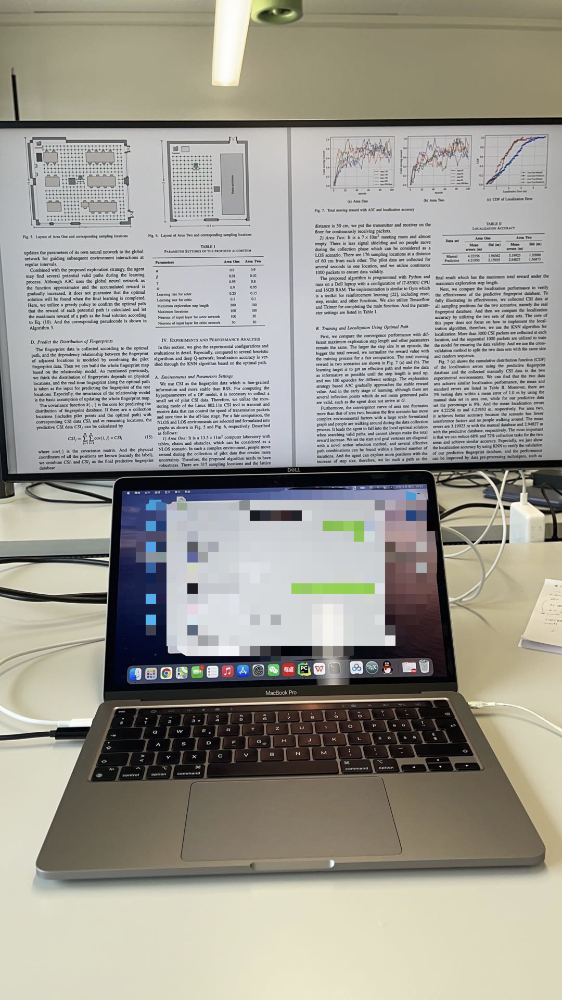
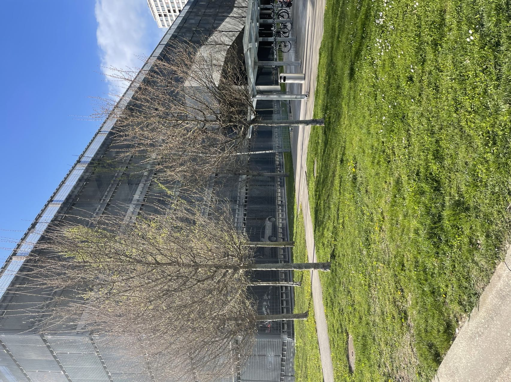

My Events
19.01.2022 Submitting the revised TNSE
I reproduced five existing algorithms as the comparative experiments to improve this paper, hope it can be directly accepted!
06.1.2022 Traveling for the United Nations and CERN

Today, I go to Gevena for having a look at the United Nations. And I also find the atomic accelerator in European Organization for Nuclear Research.
20.12.2021 Watching Ice Hockey Game

It is my first time watching a live sports match. ZSC Lions wins the game! Ice hockey is very interesting and exciting.
20.11.2021 Traveling for Einsiedeln

Today is a nice weather day, I and my friends go to Einsiedeln for a travel. There is a very big and magnificent church!
11.11.2021 Good news! My paper is accepted by TMC
The paper is accepted with no changes! Now, I have published three CCF-A or top-level papers on the IEEE Journals during my phd!
04.11.2021 Received TNSE Comments
It took six months for reviewing, and I got three positive comments, good news!
16.10.2021 Traveling for Jura Park, Canton Aargau

Today, I am not alone. I went to the Jura Park with my friends! What a beautiful view!
08.09.2021 Traveling for Rhine falls

It was still a persons's travel, and the waterfall was fascinating and refreshing.
10.08.2021 Traveling for the Alps

No words can describe the beauty and grandeur of the Alps.
03.08.2021 Submitting the revised TMC
I added a large number of comparative experiments to improve this paper, hope it can be directly accepted!
07.07.2021 Looking for Van Gogh's self-portrait

Van Gogh is one of the most famous artists. Today, I go to the Museum Zurich and find his self-portrait.
30.06.2021 Submitting my paper to INFOCOM'2022
After two months of hard work, I finished the paper. It focuses on how to use imitative learning to accurately predict CSI data distribution for path planning.
17.06.2021 Traveling for Zurich Lake

Today is good weather, I decide to walk around Zurich Lake. I heard about the lake when I was young, it is very big and beautiful. At the same time, there are also so many tourists.
5.06.2021 Writing for my next paper
I am going to finish my sixth paper during my phd which will be submitted to INFOCOM'2022, the deadline is 30th, July. However, there are still so many bugs in the codes, cry.
10.05.2021 Received TMC Comments
I just received the comments, omg, the paper took 8 months for reviewing! Fortunately, all the comments are positive, I will finish the revision.
25.04.2021 Updating my laptop

I take the laptop before arriving in Zurich, but it is too heavy and has poor performance. An Italian classmate recommended an online shop to me, so, I bought a new MacBook pro with M1. It's too suitable for scientific research.
13.04.2021 Becoming the jointly doctoral student at ETH Zurich
Today, I get my work contract and am going to study at ETH Zurich for one year. It is an important event for me, I will work hard!
09.04.2021 Arrived in Zurich

Today is the first day I arrived in Zurich, Switzerland. The weather is pretty good, and the airplane took more than 18 hours from China to here. I will have a life at here for one year, hope everything could be ok.